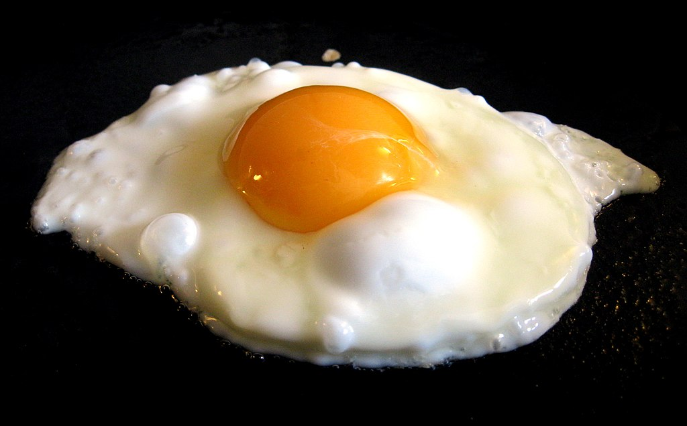

Half Fried Egg

Description
A half fried egg, also known as a sunny side up egg, is a simple and
classic breakfast dish. It involves cooking an egg just until the whites
are set and the yolk remains runny. It is quick, easy to make, and pairs
well with toast, salads, or as a topping on various dishes.
Ingredients
- 1 large egg
- 1 tablespoon butter or oil
- Salt to taste
- Black pepper to taste
- Optional: chopped herbs for garnish (such as parsley or chives)
Steps
-
Heat the pan: Place a non-stick skillet over medium heat and add the
butter or oil.
-
Crack the egg: Once the butter is melted or the oil is hot, crack the
egg gently into the pan.
-
Cook the egg: Let the egg cook undisturbed until the whites are fully
set but the yolk is still runny, about 2-3 minutes.
- Season: Sprinkle salt and black pepper over the egg to taste.
-
Serve: Carefully remove the egg from the pan using a spatula. Garnish
with chopped herbs if desired. Serve hot.
Homepage